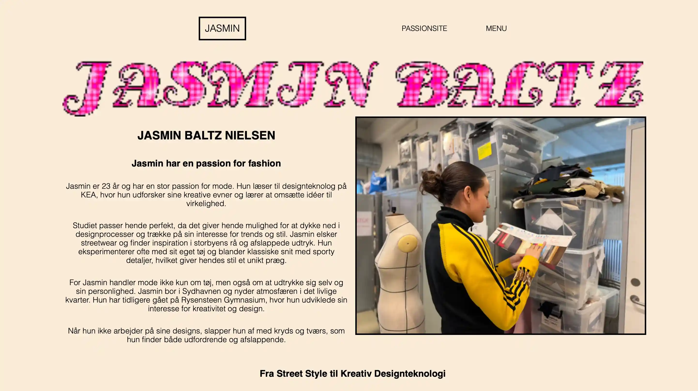

tema 5.1
Passions site
I tema 5 arbejdede vi med grundlæggende indhold og skulle finde en
person med en passion, som vi kunne lave en video og hjemmeside om.
Det var første gang, vi arbejdede med Premiere Pro, hvor vi lærte at
filme, klippe og redigere videoen.
Opgaven gav os også mulighed for at kombinere storytelling med
design, så vi kunne skabe et visuelt og engagerende passionssite,
der reflekterede personens historie og interesse.
